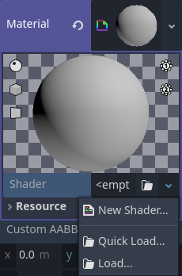
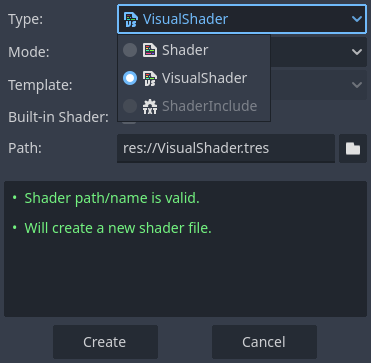
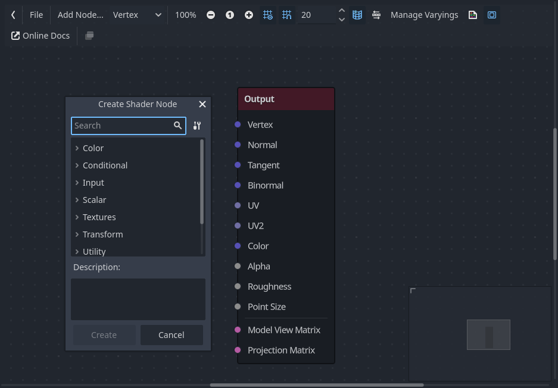
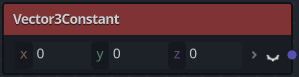
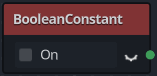
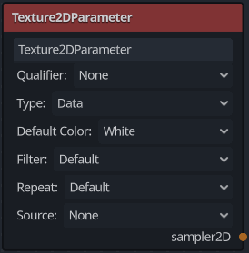
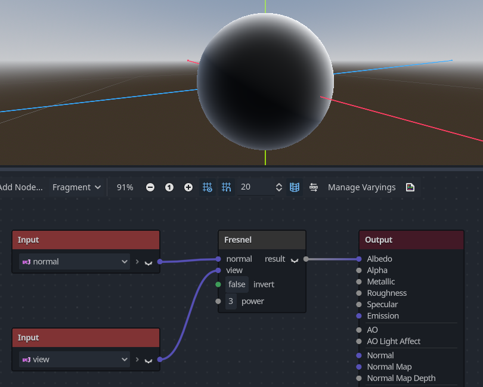

Sử dụng VisualShader
VisualShader là lựa chọn trực quan để tạo shader.
Vì shader vốn gắn liền với hình ảnh, cách tiếp cận dựa trên đồ thị với bản xem trước của texture, material, v.v. mang lại nhiều tiện lợi hơn so với shader chỉ viết bằng script. Mặt khác, VisualShader không cung cấp tất cả tính năng của shader script, và đôi khi bạn cần dùng song song cả hai cho một số hiệu ứng cụ thể.
Ghi chú
Nếu bạn chưa quen với shader, hãy bắt đầu bằng cách đọc Giới thiệu về shader.
Tạo một VisualShader
VisualShader có thể được tạo trong bất kỳ class_ShaderMaterial nào. Để bắt đầu dùng VisualShader, hãy tạo một ShaderMaterial mới trong một đối tượng tùy chọn.

Sau đó gán một resource class_Shader cho thuộc tính Shader.

Nhấp vào resource Shader mới và hộp thoại Create Shader sẽ tự động mở ra. Đổi tùy chọn Type thành class_VisualShader trong danh sách thả xuống, rồi đặt tên cho nó.

Nhấp vào visual shader bạn vừa tạo để mở Shader Editor. Bố cục của Shader Editor gồm bốn phần: danh sách tệp ở bên trái, thanh công cụ phía trên, chính đồ thị, và bản xem trước material ở bên phải có thể tắt đi

Từ trái sang phải trên thanh công cụ:
Mũi tên có thể dùng để bật/tắt hiển thị bảng tệp.
Nút
Filemở một menu thả xuống để lưu, tải và tạo tệp.Nút
Add Nodehiển thị một menu bật lên để bạn thêm node vào đồ thị shader.Menu thả xuống là loại shader: Vertex, Fragment và Light. Giống như với shader script, nó xác định những node dựng sẵn nào sẽ có sẵn.
Các nút và ô nhập số tiếp theo điều khiển mức thu phóng, bám lưới và khoảng cách giữa các đường lưới (tính bằng pixel).
Nút bật/tắt này điều khiển việc bản đồ thu nhỏ của đồ thị ở góc dưới bên phải trình chỉnh sửa có hiển thị hay không.
Nút tự động sắp xếp các node đã chọn sẽ cố gắng sắp xếp mọi node bạn đã chọn một cách hiệu quả và gọn gàng nhất có thể.
Nút Manage Varyings mở một menu thả xuống cho phép bạn thêm hoặc xóa một varying.
Nút hiển thị code được sinh ra sẽ hiển thị code shader tương ứng với đồ thị của bạn.
Nút bật/tắt này bật hoặc tắt bản xem trước material.
Nút
Online Docsmở trang tài liệu này trong trình duyệt web của bạn.Nút cuối cùng cho phép bạn đặt trình chỉnh sửa shader vào một cửa sổ riêng, tách khỏi phần còn lại của trình chỉnh sửa.
Ghi chú
Mặc dù VisualShader không yêu cầu viết code, chúng có cùng logic với shader script. Bạn nên học những kiến thức cơ bản của cả hai để hiểu rõ pipeline shading.
Đồ thị visual shader được chuyển đổi thành shader script ở phía sau, và bạn có thể xem code này bằng cách nhấn nút cuối cùng trên thanh công cụ. Điều này tiện lợi để hiểu một node cụ thể làm gì và cách tái tạo nó trong script.
Sử dụng Visual Shader Editor
Theo mặc định, mọi VisualShader mới đều có một node output. Mọi kết nối node đều kết thúc tại một trong các socket của node output. Node là đơn vị cơ bản để tạo shader của bạn. Để thêm node mới, nhấp vào nút Add Node ở góc trên bên trái hoặc nhấp chuột phải vào bất kỳ vị trí trống nào trong đồ thị, và một menu sẽ bật lên.

Popup này có các thuộc tính sau:
Nếu bạn nhấp chuột phải vào đồ thị, menu này sẽ được gọi tại vị trí con trỏ và node được tạo, trong trường hợp đó, cũng sẽ được đặt tại vị trí đó; nếu không, nó sẽ được tạo ở giữa đồ thị.
Menu có thể thay đổi kích thước theo chiều ngang và chiều dọc để hiển thị nhiều nội dung hơn. Kích thước và vị trí nội dung cây được lưu giữa các lần gọi, nên nếu bạn lỡ đóng menu bật lên, bạn có thể dễ dàng khôi phục trạng thái trước đó.
Các tùy chọn
Expand AllvàCollapse Alltrong menu tùy chọn thả xuống có thể dùng để dễ dàng liệt kê các node có sẵn.Bạn cũng có thể kéo và thả node từ menu bật lên vào đồ thị.
Mặc dù menu bật lên đã sắp xếp node theo danh mục, ban đầu nó có thể trông khá choáng ngợp. Hãy thử thêm một vài node, cắm chúng vào socket output và quan sát điều gì xảy ra.
Khi kết nối bất kỳ output scalar nào với một input vector, tất cả các thành phần của vector sẽ nhận giá trị của scalar.
Khi kết nối bất kỳ output vector nào với một input scalar, giá trị của scalar sẽ là trung bình các thành phần của vector.
Giao diện node Visual Shader
Các node visual shader có cổng input và cổng output. Cổng input nằm ở bên trái node, còn cổng output nằm ở bên phải node.

Các cổng này được tô màu để phân biệt loại cổng:
Kiểu |
Màu sắc |
Mô tả |
Ví dụ |
|---|---|---|---|
Scalar |
Xám |
Scalar là một giá trị đơn. |
|
Vector |
Tím |
Vector là một tập hợp các giá trị. |
 |
Boolean |
Xanh lá |
Bật hoặc tắt, true hoặc false. |
 |
Transform |
Hồng |
Một ma trận, thường dùng để biến đổi các đỉnh. |
|
Sampler |
Cam |
Một texture sampler. Nó có thể dùng để lấy mẫu texture. |
 |


Tất cả các loại này đều được dùng trong các phép tính đỉnh, fragment và ánh sáng trong shader. Ví dụ: nhân ma trận, cộng vector hoặc chia scalar.
Còn có các loại khác nhưng đây là những loại chính.
Các node Visual Shader
Dưới đây là một số node đặc biệt đáng để biết. Danh sách này chưa đầy đủ và có thể được mở rộng thêm với nhiều node và ví dụ hơn.
Node Expression
Node Expression cho phép bạn viết các biểu thức Godot Shading Language (tương tự GLSL) bên trong visual shader. Node có các nút để thêm bất kỳ số lượng cổng input và output cần thiết và có thể thay đổi kích thước. Bạn cũng có thể đặt tên và loại cho từng cổng. Biểu thức bạn đã nhập sẽ được áp dụng ngay lập tức cho material (khi focus rời khỏi ô văn bản biểu thức). Mọi lỗi phân tích cú pháp hoặc biên dịch sẽ được in ra tab Output. Các output được khởi tạo với giá trị 0 theo mặc định. Node nằm trong tab Special và có thể dùng ở mọi chế độ shader.
Khả năng của node này gần như không giới hạn – bạn có thể viết các thủ tục phức tạp và dùng toàn bộ sức mạnh của shader dạng văn bản, chẳng hạn như vòng lặp, từ khóa discard, các kiểu mở rộng, v.v. Ví dụ:

Node Reroute
Node Reroute chỉ dùng cho mục đích tổ chức. Trong một shader phức tạp có nhiều node, bạn có thể thấy các đường nối giữa các node khiến mọi thứ khó đọc. Reroute, như tên gọi của nó, cho phép bạn điều chỉnh đường nối giữa các node để dễ đọc hơn. Bạn thậm chí có thể dùng nhiều node reroute cho một đường nối, có thể dùng để tạo các góc vuông.

Để di chuyển một node reroute, hãy đưa con trỏ chuột lên trên nó và nắm lấy tay cầm xuất hiện.

Node Fresnel
Node Fresnel được thiết kế để nhận vector pháp tuyến và vector nhìn, và tạo ra một scalar là tích vô hướng đã được bão hòa (saturate) giữa chúng. Ngoài ra, bạn có thể thiết lập phép đảo ngược và số mũ của phương trình. Node Fresnel rất phù hợp để thêm hiệu ứng chiếu sáng dạng viền (rim) cho đối tượng.

Node Boolean
Node Boolean có thể được chuyển đổi thành Scalar hoặc Vector để biểu diễn lần lượt 0 hoặc 1 và (0, 0, 0) hoặc (1, 1, 1). Đặc tính này có thể dùng để bật hoặc tắt một số phần hiệu ứng chỉ với một cú nhấp.

Node If
Node If cho phép bạn thiết lập một vector sẽ được trả về dựa trên kết quả so sánh giữa a và b. Có ba vector có thể được trả về: a == b (trong trường hợp này tham số tolerance được dùng làm ngưỡng so sánh – theo mặc định nó bằng giá trị tối thiểu, tức 0.00001), a > b và a < b.

Node Switch
Node Switch trả về một vector tùy theo điều kiện boolean là true hay false. Boolean đã được giới thiệu ở trên. Nếu bạn muốn chuyển đổi một vector thành boolean true, tất cả các thành phần của vector phải khác 0.

Mesh Emitter
Node Mesh Emitter dùng để phát hạt từ các đỉnh của mesh. Node này chỉ có sẵn cho các shader ở chế độ Particles.
Hãy lưu ý rằng không phải mọi đối tượng 3D đều là tệp mesh. Không thể kéo và thả một tệp glTF vào đồ thị. Tuy nhiên, bạn có thể tạo một scene kế thừa từ nó, lưu mesh trong scene đó thành một tệp riêng và dùng tệp đó.

Bạn cũng có thể kéo và thả các tệp obj vào trình chỉnh sửa đồ thị để thêm node cho mesh cụ thể đó; các tệp mesh khác sẽ không hoạt động theo cách này.